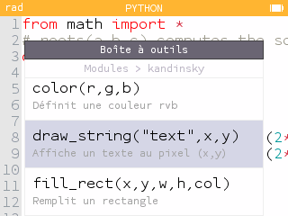

L'environnement NumWorks et le système Epsilon
La NumWorks ne se résume pas à son boîtier et son microcontrôleur : elle intègre également un système d'exploitation embarqué conçu spécifiquement pour ses capacités matérielles et ses usages éducatifs, baptisé Epsilon. L'étude de son code source public permet d'analyser ses composants logiciels et leur influence directe sur la conception de l'ECMMP.
1. Une architecture logicielle adaptée aux ressources disponibles
Epsilon repose sur une organisation modulaire articulée autour de plusieurs composants fondamentaux :
- Ion : assure l'abstraction matérielle et la gestion des interactions bas niveau.
- Kandinsky : prend en charge les opérations graphiques et l'affichage à l'écran.
- Escher : fournit les éléments d'interface utilisateur nécessaires aux applications de la calculatrice.
L'intégration de MicroPython au sein de cet environnement embarqué impose de fortes restrictions par rapport à une installation standard sur ordinateur. Pour s'adapter aux ressources limitées de la calculatrice, certaines fonctionnalités de l'interpréteur sont restreintes ou désactivées lors de la compilation :
-
La manipulation des données binaires (struct et bytearray)
:
Le module
structpermet de convertir des données entre leur représentation binaire et des valeurs exploitables, tandis que le typebytearraymanipule des séquences d'octets modifiables. Leur absence ou restriction dans certaines configurations complique la lecture, la conversion et le traitement direct des fichiers ou des données graphiques binaires, imposant de concevoir des alternatives adaptées. - L'organisation des données (collections, array et attrtuple) : Ces structures facilitent normalement l'organisation des données, l'utilisation de types spécifiques ou l'accès aux éléments d'un tuple par leur nom. En leur absence, le développeur doit s'appuyer sur les structures natives restantes ou concevoir ses propres mécanismes de remplacement, tout en surveillant l'impact sur la mémoire et les performances.
-
L'accès aux informations d'exécution et aux flux (sys, io,
__file__) :
Le module
sysfournit des informations sur l'interpréteur,iogère les entrées/sorties et l'attribut__file__indique le chemin d'un module. Des restrictions sur ces outils complexifient la gestion des fichiers et la localisation des ressources, un point critique pour un IDE modulaire qui doit charger dynamiquement ses composants sans saturer la RAM. -
L'exécution asynchrone et la gestion de la mémoire (async/await
et gc) :
La syntaxe asynchrone
async/awaitpeut être désactivée selon la compilation, nécessitant d'autres modes d'organisation coopérative des tâches. Quant au ramasse-miettes (garbage collectorgc), il récupère la mémoire des objets inaccessibles, mais ne peut libérer un objet s'il reste référencé, exigeant une gestion rigoureuse des références.
Ces contraintes démontrent qu'il ne s'agit pas simplement de porter un éditeur de code d'ordinateur, mais de concevoir une architecture logicielle sur mesure qui limite les allocations inutiles et optimise le chargement des ressources.
2. Les fonctionnalités documentées dans la Toolbox
L'environnement de programmation de la NumWorks intègre une Toolbox
donnant accès à des fonctions, des variables, des symboles, des
structures de contrôle et des modules. En explorant son arborescence
(par exemple Toolbox -> Modules -> Kandinsky), l'utilisateur
découvre les fonctions de dessin comme
draw_string(text, x, y).

Toutefois, l'aide intégrée présente des limites : elle n'affiche pas
nécessairement l'ensemble des paramètres acceptés par les fonctions.
Par exemple, draw_string accepte des paramètres
additionnels pour personnaliser les couleurs du texte et de son
arrière-plan.
Pour l'ECMMP, cette nuance est capitale : un environnement de développement se doit non seulement d'offrir une zone d'édition, mais également d'aider l'utilisateur à découvrir les fonctionnalités disponibles et à comprendre leurs paramètres effectifs.
3. Les contraintes liées à l'exécution des programmes
Les scripts exécutés sur la NumWorks ne disposent pas de ressources dédiées exclusives ; ils partagent le processeur avec les autres tâches du système (gestion du clavier, affichage, rafraîchissement global).
L'analyse des configurations de MicroPython, en particulier la macro
MICROPY_VM_HOOK_LOOP, permet d'étudier la liaison entre
la machine virtuelle et les opérations du système. En pratique, une
boucle de calcul continue ou un rafraîchissement d'écran non maîtrisé
sature inutilement les ressources et ralentit l'ensemble de la
calculatrice.
L'ECMMP intègre donc cette contrainte au cœur de sa conception : l'interface doit limiter ses actualisations aux strictes modifications utiles et employer des boucles de traitement efficaces pour concilier les exigences d'un IDE avec les capacités physiques de la NumWorks.